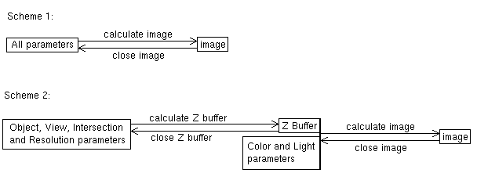

A point in this context is a complex number (in case of a two-dimensional fractal). A complex number consist of two components, which are independent of each other. They are called real and imaginary part. If the imaginary part is zero, the complex numbers are identical to the real numbers (e.g. 1.23324, -23, ...). To mark the imaginary part, the letter "i" is used. There is one rule: i*i=-1. (This fact shows, that "i" can't be a real number, because no real number multiplied with itself is -1.) In general a complex number "c" is written like this: c = a + i*b, where "a" is the real part and "b" is the imaginary part (both a and b are real numbers). In two-dimensional fractal programs the real part is identified with the X coordinate on the screen, the imaginary part with the Y coordinate.
Quat needs numbers which have one component more to calculate its fractals. This component is necessary for the Z coordinate. Such numbers don't exist, but there are numbers with four components: the Hamiltonian quaternions (sometimes also called "hypercomplex numbers"). They consist of one real part and three imaginary parts. The "signs" for these parts are 1, i, j and k. "1" corresponds to the real part, "i" to the imaginary part of the complex numbers. In case j- and k-part are zero, we again have the good old complex numbers. There are special multiplication rules for 1, i, j and k. (These rules reveal a difference between quaternions and hypercomplex numbers, but it isn't of any importance for this section. Quat uses quaternions, but for simplicity I'll use both names exchangeable.)
Four components would allow even four-dimensional fractals, but for practical reasons (see above) and the limitations of human mind (_not_ the programmer's incapacity...), Quat is "only" able to render three-dimensional fractals. The additional fourth dimension (fourth component) is set to a constant value, which is defined by the parameter 4th-dim. Intersection in the Object Editor. This proceeding produces a three-dimensional intersection of a four-dimensional fractal analogous to the two-dimensional intersection of the three-dimensional fractals calculated by Quat which is made by common fractal programs.
Back to our iteration formula. Quat uses one of the following formulas
(among others):
x0 is the starting-value ( = point that has to be calculated)
"n" is a count index which numbers the "x" (n=0,1,2,3...).
The value "c" in the formula is a hypercomplex number, that remains
constant during the whole calculation. This is defined in the Object Editor
as parameter c.
cdetermines the shape of the fractal.
One could see that the sequence of all xn defined by the iteration formula (also called "orbit") can show three different schemes:
This formulation isn't completely exact: there is the problem that a computer can't do the calculation up to infinity to see whether the sequence converges or not. (The reason is the limitation of human life, again not incapacity of the programmer :-) ). Because of this the calculation is stopped after a previously defined number of iterations. This number is set in the Object Editor through the parameter Max. Iteration (simply called maxiter in the following)
But how does Quat know whether the sequence goes to infinity or not? Thus there is the value Bailout (naming freely after "Fractint"). If this value was exceeded during the iterations, it is assumed that the sequence goes towards infinity.
Now we are able to describe the calculated object exactly: It is the amount of all points ( = numbers) x0, for which the sequence defined by the iteration formula of the xn didn't exceed the value bailout after at most maxiter iterations. (How complicated nice shapes are described mathematically... On the other hand: How nice mathematics can be!)
But to calm you down a little bit: those who don't understand all this or who simply are not interested in it can, nevertheless, calculate nice pictures.
As a result we have two different coordinate systems: First, the system that has to be displayed (the Q-Space), second, the system on which is projected (view plane, monitor).
The Q-Space is defined by three axes, called 1, i and j, analogous to the components of hypercomplex numbers (the k-part is set to a constant value, see above). The 1-axis is the real axis ("ray of numbers"), the plane defined by 1- and i-axis is the complex plane, in which 2D fractal programs calculate their fractals.
On the view plane there are two axes of the view coordinate system, called X and Y axis, which correspond to the horizontal and vertical direction of the monitor. Additional there is a Z axis, which points perpendiculary away from the view plane and into the direction of the fractal.
Regarding the fact that fractal objects are always around the origin of the Q-Space, the following way to construct the view plane seems obvious. There is a point in Q-Space defined, the View Point. The view plane goes through the view point and is perpendicular on the vector from the origin to view point. (view point has a double meaning: it defines position and orientation of the view plane). The view point defines the Z axis of the view coordinate system. Henceforth we will move only on the so defined view plane.
Now there has to be taken a rectangular window on the view plane (= the view window), which is oriented in the way that two opposite lines of the rectangle are parallel to the projection of the Up (Orientation) vector (see later) on the view plane. The direction of this projection is called Y direction and corresponds to the vertical direction on the monitor. The horizontal direction is called X direction and corresponds to the two other lines of the rectangle. As we see, up defines where is up. Accordingly the directions of X and Y axis have been defined through this.
The diagonals of the view window/rectangle intersect in the view point (This means that the view point lies in the "middle" of the screen/view window). Now the view window is scaled around the view point as follows: the side which is the X direction gets the length Length of View Plane's X-Axis (measured in Q-Space, often simply called lxr.) and the relation between the lengths X and Y gets the same value as the relation between the X and Y resolutions (see parameters for Image resolution in the "Other Editor"). This is to achieve display without distortment. The base vectors of the view window (derived from X and Y directions) get the length 1. Now we are ready. The view coordinate system is defined completely.
To get all possible positions of the view window (up to now every describable plane is oriented around the origin), the view plane is shifted in X and Y direction to the amount of the values given through the parameters Move in the View Editor. (it's a movement in the view plane's own coordinate system).
Having created a ZBuffer, you can still change certain parameters (light source, palette, color formula, Phong highlight and ambient light) and generate an image from the ZBuffer, which works relatively fast.

Chart 1: Different ways to an image
ZBuffers open a wide field of experimentation, you can find out the
best look of the object by trying some different looks.
ZBuffers have the suffix "ZPN". The full set of parameters is stored
in it, as well as in images (PNG). ZBuffers are quite usual PNG files,
but they don't contain an image. Some graphics programs even recognize
them and display them very easily when they are opened, some other need
the suffix to be changed to "PNG". I don't know if it makes sense to directly
view ZBuffers, because one can't do anything with the data stored therein.